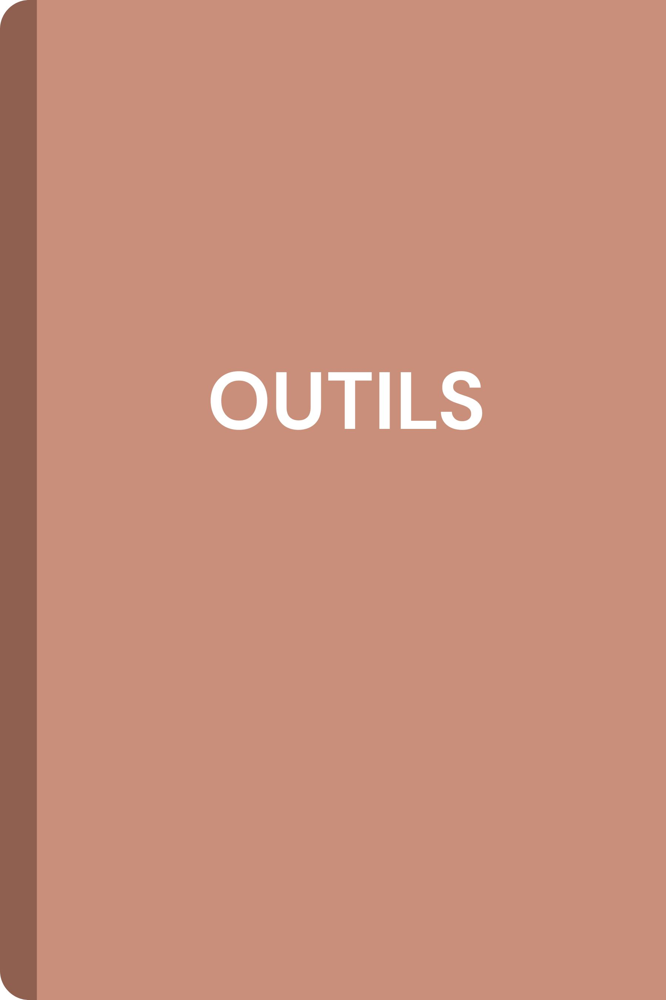

Cette page regroupe des outils pouvant être utilisés tout au long de l’année en Français 3e. La fiche « Compétences de rédaction » présente les principales compétences à acquérir progressivement pour améliorer ses écrits et préparer les travaux de rédaction du DNB professionnel. Les mémos de conjugaison peuvent être utilisés pendant les exercices de réécriture ou de rédaction.